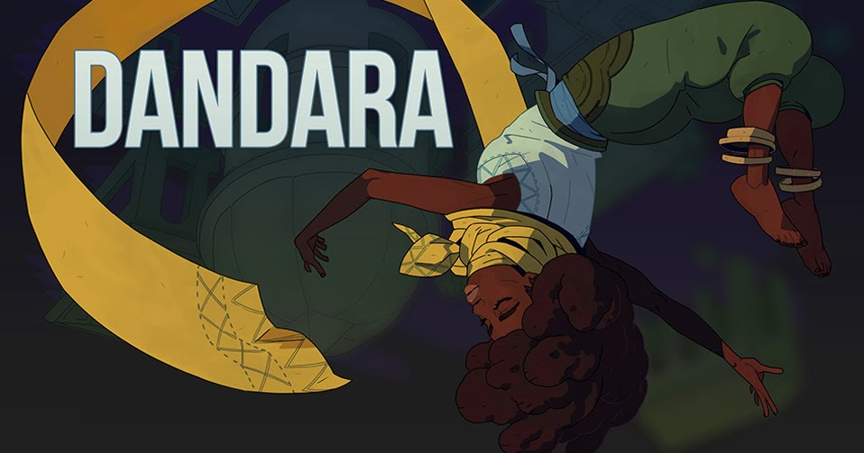

Dandara: Trials of Fear Edition
Desenvolvedores

sobre
Dandara: Trials of Fear Edition é um jogo brasileiro de ação e plataforma no estilo metroidvania,
desenvolvido pelo estúdio Long Hat House, sediado em Belo Horizonte, Minas Gerais. Lançado inicialmente
em
2018, o jogo se destaca por sua proposta inovadora de movimentação e por abordar temáticas ligadas à
resistência e liberdade.
Inspirado na figura histórica de Dandara dos Palmares, o jogo reinterpreta sua luta em um universo
fictício
chamado Salt, que enfrenta a opressão e a estagnação. O diferencial mecânico está na movimentação: ao
invés
dos tradicionais saltos e corridas, Dandara se locomove por meio de impulsos gravitacionais, saltando
entre
superfícies em qualquer direção. Essa abordagem proporciona desafios únicos de exploração e combate,
exigindo raciocínio espacial e precisão do jogador.
A edição Trials of Fear expande a experiência original com novos cenários, inimigos, chefes, habilidades
e
uma narrativa mais aprofundada. Além disso, aprimora a ambientação sonora e visual, reforçando o tom
introspectivo e simbólico da jornada.
Dandara foi amplamente reconhecido por sua originalidade e recebeu destaque internacional, sendo lançado
para diversas plataformas, incluindo PC, consoles e dispositivos móveis. É considerado um exemplo
notável da
capacidade criativa da indústria brasileira de jogos digitais.